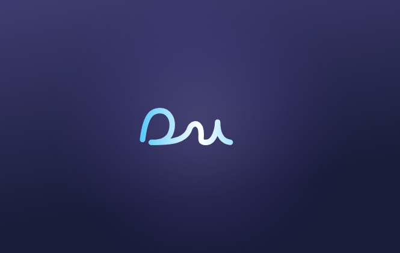
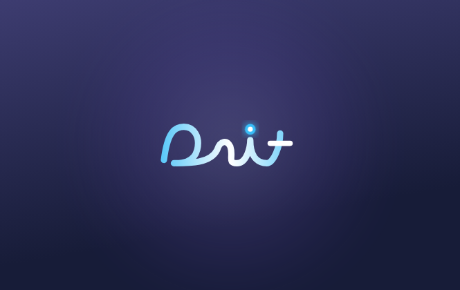
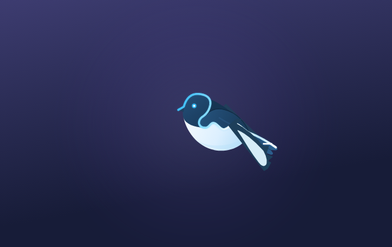
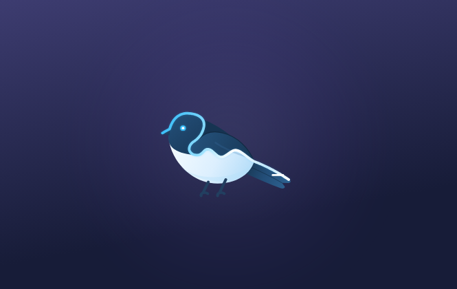
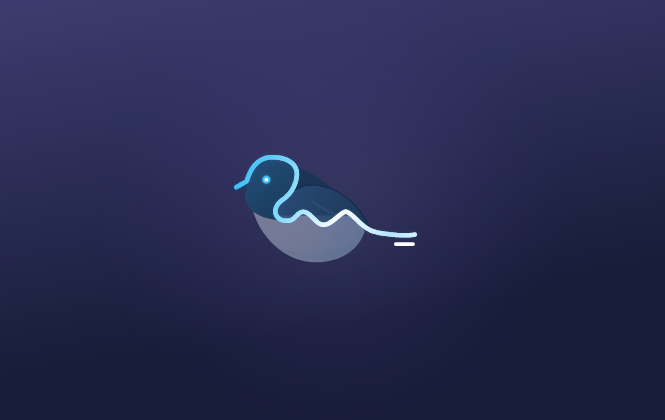
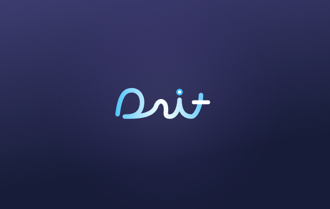
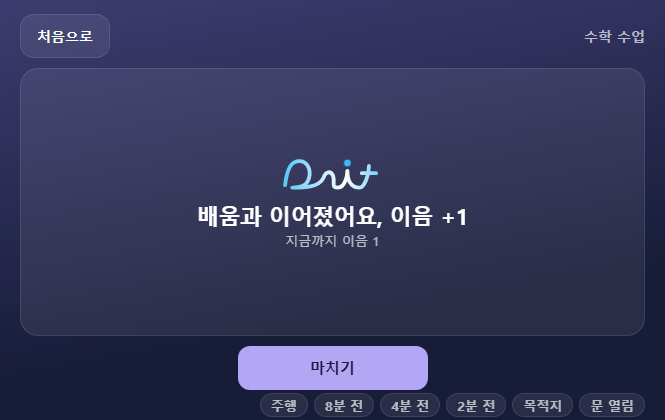
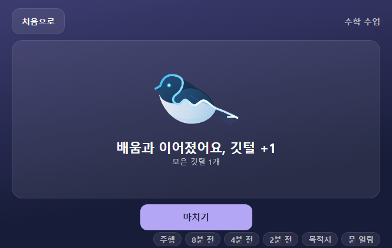

앱 담당 교사와 Claude가 하루 동안 한 일. 사진은 브라우저 미리보기(앱 창 665×420)에서 찍었다. 에뮬레이터 화면은 확인 안 함.
오늘 정한 것
보상 이름은 깃털(전 이름 「이음」). 첫 화면·수업 화면의 보상 칸 이름은 「모은 깃털」, 내용은 「1개」.
캐릭터 새의 이름은 잇찌, 모티브는 까치. 잇찌는 로고 옆에 따로 있는 캐릭터가 아니라 로고가 변한 모습이다(로고 → 새, 새 → 로고).
깃털은 잇찌가 주는 것이 아니라 아이가 받아 잇찌 날개로 모이는 것. 잇찌는 말하지 않고 몸짓으로 마음을 보여 준다.
날개를 펴면 까치처럼 흰 무늬 띠가 보인다(팀에서 받은 오프닝의 까치 날개). 접힌 날개의 어깨 흰 무늬는 어색해서 넣지 않는다.
정면 잇찌: 리본은 몸 윤곽을 따라 한 줄로, 부리는 세모의 양쪽 윗선이 빛나는 모양(「나」).
앱 ① 시작 화면
전: 로고를 손글씨처럼 쓴 뒤 점이 톡 찍히고 위로 올라간다. 후: 잇찌가 까치 날갯짓으로 오른쪽 위에서 날아와 다리를 내리고 앉았다가, 리본이 펴지며 다잇 로고로 바뀐다. 그다음은 전과 같다(점, 소리, 위로). 화면을 누르면 건너뛴다. 움직임 줄이기 설정이면 전처럼.

전0.6초 로고 쓰는 중

전1.3초 점이 찍힘

후0.5초 날아오는 잇찌

후1.5초 앉음

후2.2초 몸이 빠지며 리본이 펴짐

후2.7초 로고가 됨(이후 전과 같음)
앱 ② 수업 끝 화면
전: 로고의 점이 톡 튀고 「이음 +1」. 후: 로고가 잇찌로 바뀌고, 「깃털 +1」 글자에서 깃털이 비틀리며 솟아올라 그네 타듯 내려와 잇찌 날개에 스며든다. 깃털이 닿기 직전 잇찌가 까치 날개를 반쯤 펴서 받고, 날개가 반짝이고 웃는 눈으로 깡충 뛴 뒤 고개를 갸웃하고 다시 로고로 돌아간다(약 8~9초, 처음 한 번만, 주행 화면에는 없음).

전로고 점 톡, 「이음 +1」

후로고가 잇찌로 바뀐 장면, 「깃털 +1」, 「모은 깃털 1개」
깃털이 날아오는 장면과 날개로 받는 장면은 아래 행동 시안의 「깃털 받기」 카드에서 움직이는 그대로 볼 수 있다.